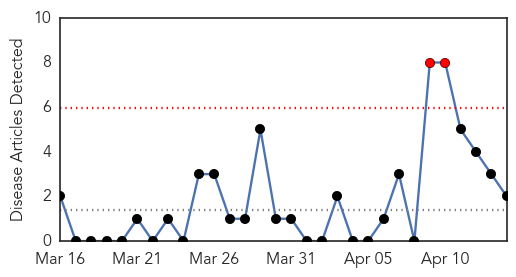
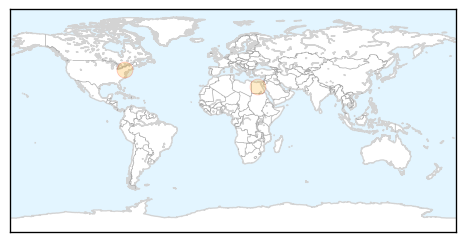

Hepatitis
30-Day Web Trend
2 alerts, 0 warnings

30-Day Twitter Trend
0 alerts, 0 warnings

Article Locations
Article Confidences

Top Articles:
Top Tweets:
-
No tweets found for Apr 14, 2014
Influenza
30-Day Web Trend
1 alerts, 0 warnings

30-Day Twitter Trend
0 alerts, 0 warnings

Article Locations

Article Confidences

Top Articles:
- 0.994
- Bird flu alert in Japan as deadly H5 virus is confirmed on farm
- 0.994
- Bird flu alert in Japan as deadly H5 virus is confirmed on farm
- 0.970
- Japan Curbs Chicken Shipments Following Bird Flu Outbreak
- 0.964
- Kiwis urged to get flu vaccinations before Easter
- 0.951
- Lassa virus on flight raises questions about spread of disease
- 0.870
- Learning from the South: influenza immunization in pregnancy
- 0.822
- Study notes H5N1 tweaks that boost airborne spread
- 0.797
- Kumamoto launches mass chicken cull over H5 avian flu scare
Top Tweets:
-
No tweets found for Apr 14, 2014